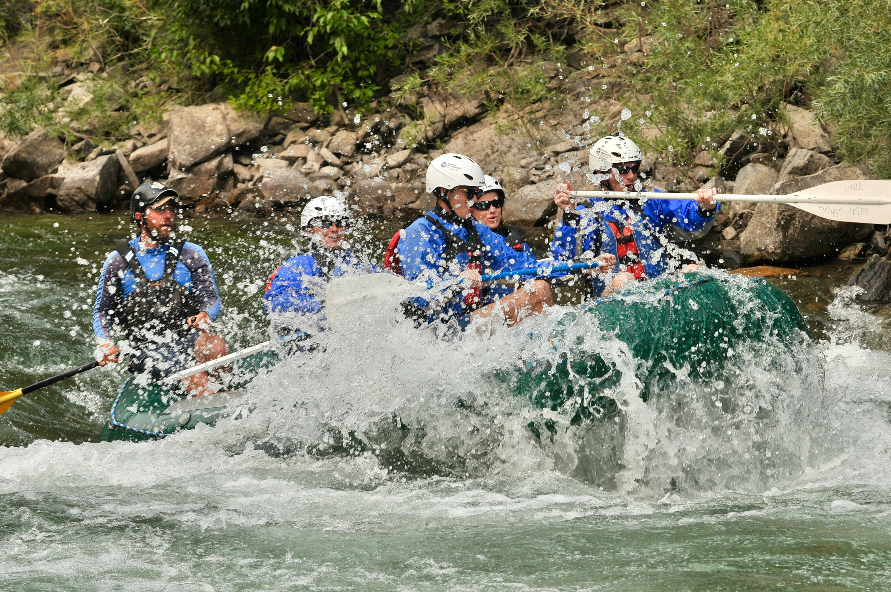
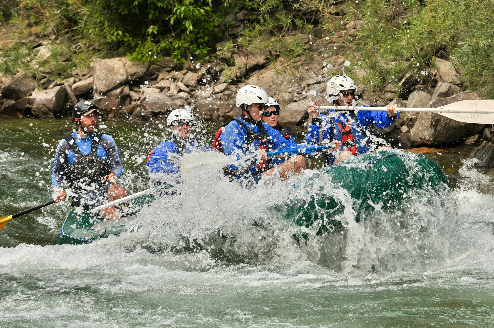
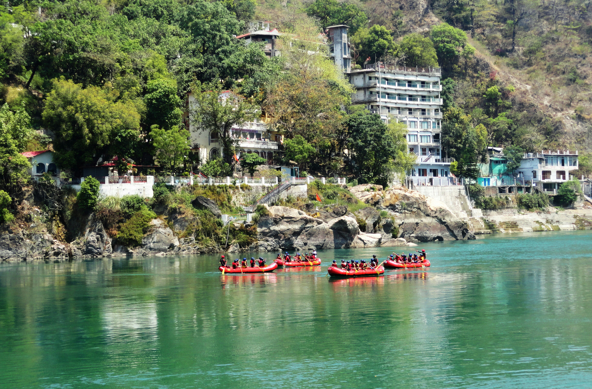
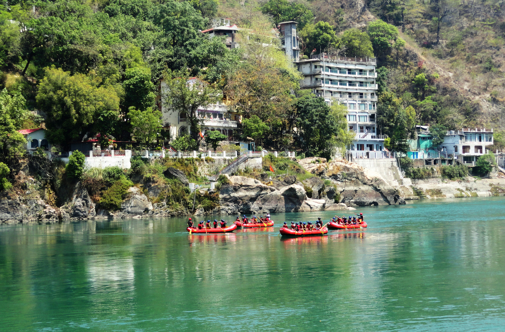

Our mission is to deliver unforgettable, exhilarating, and secure whitewater rafting adventures from every level to enthusiasts. Positioned amidst the stunning landscapes offered by some of the most scenic rivers, we aim to forge a connection between individuals and the natural world through the exciting activity of rafting. We provide a range of guided excursions tailored to suit both novices and seasoned rafters alike, ensuring that every participant departs with lasting memories and an enhanced appreciation of nature's beauty. Our dedication to ensuring the safety of our guests, preserving the environment, and delivering outstanding customer care is paramount, with the goal of igniting a lifelong love for adventure in all who join us on the river.

White Water Rafting
History
Founded in 2002 by a collective of avid rafters and nature enthusiasts, White Water Rafting set out to transform their passion for the great outdoors into a thriving adventure service. Situated amidst the splendor of the world's most picturesque river landscapes, their mission was clear: to offer exhilarating whitewater rafting experiences that connect people with the natural world. Over the decades, the company has perfected its offerings, creating a range of rafting trips designed to cater to adventurers of all skill levels, from beginners eager to dip their toes into the rapids to seasoned thrill-seekers craving their next adrenaline rush.
With a steadfast commitment to environmental conservation and safety, White Water Rafting has not only provided thrilling adventures but also emphasized the importance of preserving our natural surroundings. Their dedication has attracted a wide-ranging clientele, from young adults seeking to disconnect from technology and reconnect with nature, to older adventurers looking to reignite their adventurous spirit.
Adventure Awaits You!
 

 
